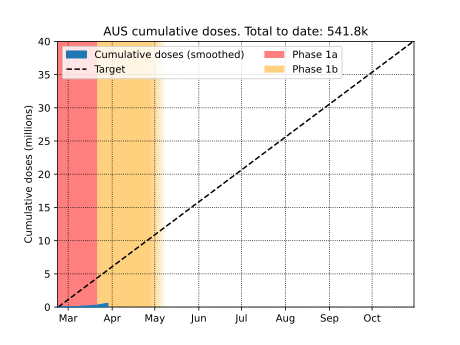
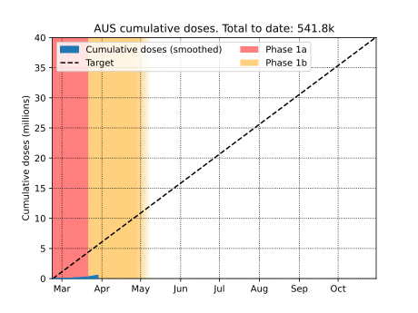

Last updated: 2021-03-29-12:45 Melbourne time
Updates whenever the federal government releases latest vaccination data.
Australian COVID vaccination rollout
Below are daily and cumulative COVID-19 vaccine doses administered in Australia, as
of the latest federal figures. These are compared to the average rate required for
40 million doses to be administered by the end of October, which is approximately
what Australia is targeting.
 

Details
-
Data has been smoothed using 2-day Gaussian smoothing. This allows the general
trend to be more visible despite large day-to-day fluctuations in the data (caused
mostly by inconsistent timing of when data is released).
-
Even if the plot has updated recently, the latest data shown may only be up until; some previous date. This occurs if, for example, the government releases data pertaining to several days earlier.
Source for dose numbers: covidlive.com.au/
Plot by Chris Billington. Contact: chrisjbillington@gmail.com
Python script for producing the plot can be found at https://github.com/chrisjbillington/chrisjbillington.github.io/blob/master/aus_vax.py.